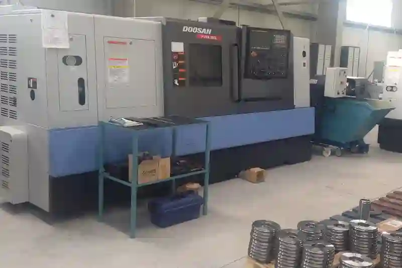
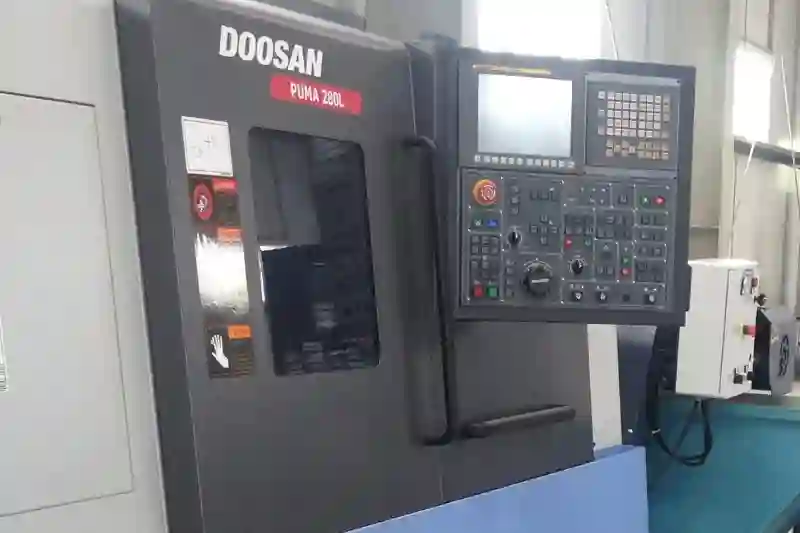
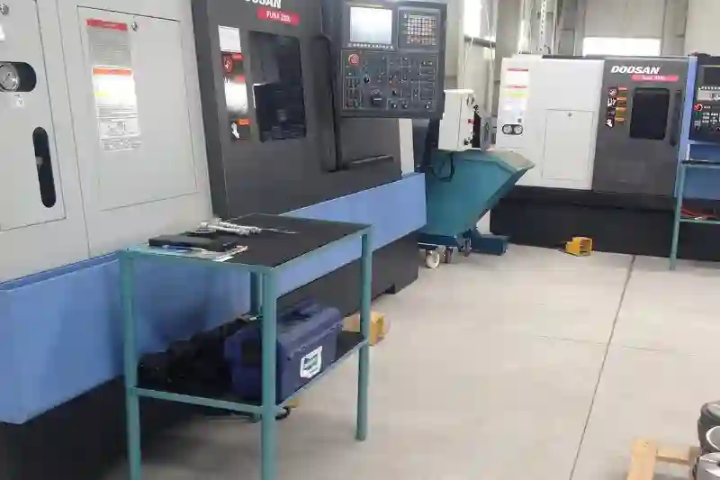

Doosan / DN Solutions PUMA 280L CNC TornaEndüstriyel Üretimde Güç, Hassasiyet ve Süreklilik
Modern üretim dünyası, artık yalnızca hassas ölçülerde parçalar üretmeyi değil, aynı zamanda bu süreci istikrarlı, ölçeklenebilir ve sektörel beklentilere uygun şekilde yönetebilmeyi gerektiriyor. Özellikle orta ve büyük ölçekli sanayi işletmelerinde; hidrolik, otomotiv, makine imalatı ve iş makineleri yan sanayisinde kullanılan kritik parçaların işlenmesi, CNC torna teknolojisinin en verimli hâllerinden biri olan PUMA serisinin sahneye çıkmasını sağlıyor.
Doosan / DN Solutions PUMA 280L, 12 inç aynalı, güçlü gövde yapısına sahip, yüksek torklu ve ağır iş koşullarına uygun profesyonel bir CNC torna makinesidir. Bu model, hem kaba talaş kaldırma kabiliyetinde hem de yüksek hassasiyetli finisaj operasyonlarında sektörün güven duyduğu bir makine hâline gelmiştir. Özellikle çelik, paslanmaz, dökme demir, pirinç, alüminyum gibi farklı malzemelerdeki geniş parça çeşitliliği için optimize edilmiştir.
PUMA 280L’nin kullanıcılar tarafından bu kadar sık tercih edilmesinin sebebi yalnızca teknik güç değildir; aynı zamanda makinenin sunduğu üretim sürekliliği, titreşim azaltıcı kızak yapısı, yüksek tekrarlanabilirlik ve uzun çalışma ömrü gibi faktörler de işletmelerde maliyet–performans dengesini maksimum seviyeye taşır. Büyük gövdeli makine üreticilerinin, hidrolik sistem üreticilerinin, redüktör imalatçılarının, otomotiv yan sanayi firmalarının ve makine imalat atölyelerinin PUMA serisine yönelmesinin temel nedeni budur.
PUMA 280L’nin Üretime Sağladığı Temel Avantajlar
PUMA 280L, klasik bir CNC tornadan çok daha fazlasını vadeder. Özellikle sürekli üretimin olduğu işletmelerde, operatör bağımlılığını azaltarak ve proses stabilitesini artırarak işletme maliyetlerini düşüren bir makine kimliğine sahiptir.
Ağır Talaş Kaldırma Kapasitesi ile Yüksek Performans
12 inç aynası ve güçlü tahrik sistemi sayesinde makine; büyük çaplı flanşlar, miller, hidrolik piston parçaları ve iş makinesi yedek parçaları gibi ağır işler için idealdir. Çelik malzemede bile yüksek ilerlemelerde güvenle talaş kaldırabilir ve proses stabilitesini kaybetmez.
Bu durum özellikle büyük çaplı mil üretimi, çelik flanş imalatı ve hidrolik silindir kapakları gibi operasyonlarda hem üretim hızını artırır hem de işçilik maliyetini düşürür. Bu sayede işletmeler daha kısa çevrim süreleriyle daha yüksek verimlilik elde eder.




Yüksek Hassasiyet ve Yüzey Kalitesi
PUMA 280L’nin taret yapısı, kızak geometrisi ve titreşim sönümleme kabiliyeti, özellikle finisaj operasyonlarında yüzey kalitesini oldukça yukarı taşır. Bu özellik, otomotiv yan sanayi cnc torna parçalarında olduğu gibi hassas tolerans gerektiren sektörlerde makineyi vazgeçilmez hâle getirir.
Geniş Parça İşleme Esnekliği
Makine; kısa flanşlardan uzun millere, hidrolik bileşenlerden hassas bağlantı parçalarına kadar çok geniş bir yelpazede parça işleyebilir. Bu nedenle hem seri üretim cnc torna süreçlerinde hem de proje bazlı özel üretimlerde güvenilir bir çözümdür.
Doosan PUMA 280L Yatay CNC Torna Teknik Özellikleri
PUMA 280L ile İşlenebilen Parça Türleri
CNC tornalamanın en büyük avantajı, dönüş simetrisine sahip parçaların hassas şekilde işlenebilmesidir. Bu bağlamda PUMA 280L aşağıdaki parçalarda sıkça tercih edilir:
Mil Üretimi
Makine, uzun boylu iş millerinin işlenmesinde oldukça başarılıdır. Bu nedenle birçok işletme tarafından çelik mil, transmisyon milleri, redüktör milleri, tarım makineleri milleri gibi parçalar için tercih edilir.
Flanş ve Bağlantı Elemanları
Geniş çaplı flanşların işlenmesinde PUMA 280L’nin rijit gövde yapısı büyük avantaj sağlar. Özellikle hidrolik ve makine sektöründe sık ihtiyaç duyulan flanş çeşitleri makinede yüksek tekrarlanabilirlik ile üretilir.
Hidrolik Sistem Parçaları
Hidrolik silindirler; kapak, gövde, piston gibi parçaların çoğu CNC tornada işlenir. PUMA 280L özellikle bu sektör için idealdir.
Otomotiv ve İş Makinesi Parçaları
Otomotiv yan sanayi, hassas tolerans ve uzun süreli seri üretim demektir. PUMA 280L bu beklentiyi karşılar.
Proje Bazlı Özel Üretim Parçaları
Makine yalnızca seri üretimde değil, özel projelerde de yüksek performans sunar. Örneğin:
- Savunma sanayi prototip parçaları
- Özel tasarım miller
- Hassas toleranslı bağlantı bileşenleri
- Alın tornalama gerektiren yüksek çaplı parçalar
Bu yetenekler, PUMA 280L’yi hem üretim atölyeleri hem de Ar-Ge merkezleri için ideal hâle getirir.
Projeni Başlat
PUMA 280L’nin Teknik Özellikleri ve İşleme Kapasitesi
Bir CNC torna makinesinin performansını belirleyen temel unsurlar; motor gücü, kızak yapısı, iş mili torku, taret kapasitesi ve işleme geometrileridir. Doosan / DN Solutions PUMA 280L, özellikle orta–büyük çaplı işlerin yoğun olduğu atölyeler için tasarlanmış güçlü bir platform sunar.
Güçlü Motor ve Yüksek Torklu İş Mili
PUMA 280L’nin iş mili, yüksek tork gerektiren çelik ve döküm parçaların kaba talaşlarında bile kararlı bir şekilde çalışır. Bu güç, operatörün aynı anda hem yüksek ilerleme hem de yüksek talaş derinliği kullanabilmesini sağlar. Özellikle kaba talaş kaldırma operasyonlarında makinenin titreşim sönümleme kabiliyeti belirgin şekilde hissedilir.
Bu özellik, ağır iş yapan hidrolik sistem üreticileri, makine imalatçıları, otomotiv yedek parça üreticileri gibi sektörlerde kritik öneme sahiptir.
12" Ayna ile Geniş Çaplı İşleme İmkânı
12 inç aynanın sağladığı geniş çap kapasitesi; hidrolik kapaklar, büyük flanşlar, büyük çaplı miller, özel gövdeler gibi parçaların bağlanmasını kolaylaştırır. Bu da makineyi özellikle hidrolik bağlantı parçaları, redüktör gövdeleri, flanş ve bağlantı elemanı imalatı gibi işlerin merkezine yerleştirir.
Uzun Parça İşleme İçin Yeterli Z Eksen Boyu
PUMA 280L’nin en büyük avantajlarından biri, uzun parçaların işlenmesini mümkün kılan Z eksen strokudur. Bu özellik, özellikle:
- Transmisyon milleri
- Redüktör milleri
- Pompa milleri
- Tarım makinesi milleri
- İş makinesi piston milleri
gibi kritik bileşenlerin üretiminde büyük kolaylık sağlar.
Bu nedenle redüktör mili cnc imalat ve cnc torna mil imalatı için makine yüksek performans gösterir.
PUMA 280L ile İşlenebilen Malzemeler
Makinenin rijit gövde yapısı ve güçlü motoru, farklı malzemelerde yüksek verim sunar. Üretimde tercih edilen başlıca malzemeler şunlardır:
Çelik (C45, 4140, 42CrMo4, 16MnCr5 vb.)
Makine çelikte yüksek ilerlemelerde dahi kararlı çalışır. Bu da cnc torna hidrolik parça üretimi, otomotiv yan sanayi cnc torna ve iş makinesi yedek parça talaşlı imalatı için idealdir.
Paslanmaz Çelik (304, 316, 431 vb.)
Hassas yüzey gerektiren piston, kapak ve bağlantı parçalarında mükemmel sonuç verir.
Dökme Demir
İş makinesi bağlantı parçaları, kapaklar ve flanşlar için sık kullanılır.
Alüminyum, Pirinç, Bronz
Hafif sanayi ve hassas bileşenlerde yüksek yüzey kalitesi sağlanır.
Sektörlere Göre PUMA 280L’nin Kullanım Avantajları
Hidrolik Sistem Üretimi
Hidrolik sektöründe kullanılan her bileşen, yüksek yüzey kalitesi ve hassas tolerans gerektirir. PUMA 280L; piston, gövde, kapak gibi parçaların üretiminde operatörlere büyük esneklik sağlar.
- hidrolik silindir parça imalatı
- hidrolik piston torna imalatı
- hidrolik kapak cnc torna
Bunlar özellikle özel talaşlı imalat süreçlerinde işletmelere yüksek kalite sunar.
Tarım Makinesi Yedek Parça Sektörü
Tarım makinesi üreticileri; mil, burç, kaplin, bağlantı flanşları gibi yüksek dayanım gerektiren parçalar üretir. PUMA 280L’nin uzun parça işleme kabiliyeti bu sektörde büyük avantaj sağlar. Bu bağlamda tarım makinesi yedek parça imalatı yapılabilmektedir.
Otomotiv Yan Sanayi
Otomotiv sektöründe prosesin kararlı olması, toleransların tekrarlanabilirliği ve seri üretim hızı büyük önem taşır. PUMA 280L’nin ağır iş yükü altında bile formunu koruyabilmesi, otomotiv üreticileri için önemli bir tercih nedenidir. Bu bağlamda otomotiv yan sanayi cnc torna olarak sıkça tercih edilmektedir.
Makine İmalatı ve Redüktör Üretimi
Redüktör gövdeleri ve milleri, hassas ölçüleriyle bilinir. PUMA 280L, rijit yapısı ve güçlü motoru sayesinde bu parçaların kaba ve ince tornalama operasyonlarında yüksek stabilite sunar. Bu bağlamda redüktör mili cnc imalat aşamalarında kullanılmaktadır.
PUMA 280L’nin Üretim Atölyelerine Sağladığı Değer
Seri Üretime Uygun Yapı
Makine, uzun süre kesintisiz çalışmaya uygun donanıma sahiptir. Bu nedenle:
- seri üretim cnc torna
- cnc torna fason imalat
- doosan cnc torna fason işleri
gibi süreçlerde işletmelere net avantaj sağlar.
Proje Bazlı Üretimler İçin Esneklik
Özel projelerde birden fazla bağlama gerektiren parçalar veya karmaşık geometri içeren mil ve flanşlar kolaylıkla işlenebilir. Bu bağlamda puma 280 cnc torna işleme, cnc torna işleme, cnc tornalama hizmeti için oldukça uygundur.
Teklif İsteyin
PUMA 280L’nin Üretim Süreçlerine Katkısı
Bir CNC torna makinesinin değerini artıran en önemli unsurlardan biri, işletmeye sunduğu operasyonel verimliliktir. Doosan / DN Solutions PUMA 280L, yalnızca güçlü bir makine değildir; aynı zamanda üretim hattının tüm süreçlerini daha hızlı, daha stabil ve daha az operatör bağımlı hâle getiren bir çözüm sunar.
Makinenin işleme kabiliyeti; kaba talaş kaldırma, finisaj tornalama, kanal açma, diş çekme, delik delme ve özel profil işleme gibi tüm temel operasyonları yüksek hassasiyetle gerçekleştirmesine olanak tanır. Bu özellikler, hem özel talaşlı imalat süreçlerinde hem de seri üretim cnc torna operasyonlarında makinenin vazgeçilmez bir unsur olmasını sağlar.
Üretim Sürekliliği ve Düşük Hata Oranı
PUMA 280L’nin en güçlü yönlerinden biri, uzun işleme döngülerinde bile ısınmaya, titreşime ve geometrik bozulmalara karşı yüksek dayanım göstermesidir. Bu, parçaların seri hâlde üretildiği sektörlerde kritik bir konudur; örneğin:
- otomotiv yan sanayi cnc torna
- hidrolik silindir parça imalatı
- tarım makinesi yedek parça imalatı
Bu alanlarda üretim hatası toleransının düşük olması, makinenin stabilitesini daha da önemli kılar. PUMA 280L bu gereksinimi kusursuz şekilde karşılar.
CAM Yazılımları ile Maksimum Uyum (Fusion 360 – SolidCAM)
Modern üretim süreçlerinde CAM yazılımları bir zorunluluk hâline gelmiştir. PUMA 280L, özellikle Fusion 360 ve SolidCAM gibi endüstri standardı yazılımlar ile yüksek uyumluluk gösterir.
Fusion 360 ile Akıcı Takım Yolu Oluşturma
Fusion 360’ın “Turning Profile”, “Face”, “Threading”, “Grooving” gibi modülleri PUMA 280L’nin geometrisine birebir uyumludur. Örneğin bir hidrolik pistonun işlenmesi gerektiğinde:
- dış çap kaba tornalama,
- alın tornalama,
- iç çevirme,
- kanal açma,
- diş açma
gibi operasyonlar tek bir program içinde akıcı şekilde oluşturulabilir. Bu da hidrolik piston torna imalatı süreçlerinde operatörün işini kolaylaştırır.
SolidCAM ile Endüstri Standardı İşleme Stratejileri
SolidCAM’in “iTurning” gibi gelişmiş stratejileri, makinenin gücünü tam kapasiteyle kullanmasına yardımcı olur. Böylece:
- talaş kaldırma oranı artar,
- işleme süresi kısalır,
- uç ömrü uzar,
- yüzey kalitesi iyileşir.
Özellikle puma 280 cnc torna işleme ve doosan cnc torna fason işleri yapan atölyelerde SolidCAM oldukça güçlü sonuçlar vermektedir.
CNC Fanuc Kontrol Ünitesi ile Programlama Kolaylığı
PUMA 280L’nin Fanuc tabanlı kontrol ünitesi, özellikle cnc fanuc torna programlama hizmeti sunan işletmeler tarafından tercih edilir. G96 sabit yüzey hızı, G71 kaba tornalama, G70 finisaj tornalama, G76 diş çekme gibi standart komutların tümü makinede sorunsuz şekilde çalışır.
Bu sayede hem deneyimli operatörler hem de CNC öğrenmeye yeni başlayanlar için ideal bir kullanım kolaylığı sağlar.
Kalite Kontrol Süreçlerinde PUMA 280L’nin Sağladığı Üstünlükler
Ölçüsel Hassasiyet ve Tekrarlanabilirlik
Makinenin kızak sistemi ve taret hassasiyeti, özellikle ±0.01 mm tolerans gerektiren parçaların üretiminde yüksek tekrarlanabilirlik sağlar. Bu özellik özellikle şu alanlarda önemlidir:
- cnc torna mil imalatı
- cnc torna flanş imalatı
- hidrolik bağlantı parçaları
- iş makinesi yedek parçaları
Tekrarlanan işler için bu doğruluk, operatör bağımlılığını büyük ölçüde azaltır.
Yüzey Kalitesinde Üst Düzey Performans
PUMA 280L, RA 1.6 – 3.2 aralığında yüzey istenen birçok iş için çift operasyon gerektirmeden finiş kalitesi sunabilir. Bu da özellikle özel talaşlı imalat işlerinde maliyet avantajı sağlar.
Proses Stabilitesi ve Düşük Rejekt Oranı
Makine performansının stabil olması, atölyelerde rejekt oranını düşürür. Parçaların aynı toleransta üretilmesi;
- otomotiv,
- hidrolik,
- tarım makinesi,
- makine imalat
sektörlerinde işletmelere ciddi avantaj sağlar.
İşletme Maliyetlerine Etkisi – Uzun Vadeli Kârlılık
PUMA 280L yalnızca güçlü bir üretim makinesi değildir; aynı zamanda işletme maliyetlerini düşüren stratejik bir yatırımdır.
Uç (insert) Tüketimini Azaltan Rijit Yapı
Makinenin rijit yapısı, talaşın kontrollü şekilde kırılmasını sağlar. Bu da:
- daha az uç kırılması,
- daha uzun takım ömrü,
- daha düşük sarf malzeme maliyeti
anlamına gelir.
Enerji Verimliliği ve Sürekli Çalışma Kapasitesi
Uzun süre yüksek yük altında çalışabilmesi, enerji tüketimindeki dalgalanmaları azaltır. Bu, özellikle cnc torna atölyesi gibi yoğun makineli çalışma yapılan işletmelerde büyük avantajdır.
İletişime Geçin
PUMA 280L’nin Fark Yarattığı Sektörler
Her CNC torna makinesi belirli bir üretim segmentine hitap eder; ancak PUMA 280L teknik yapısı sayesinde birçok sektörün gereksinimlerine aynı anda yanıt verebilen çok yönlü bir platform sunar. Makinenin yüksek rijitliği, geniş işleme hacmi, güçlü motor yapısı ve tekrarlanabilir hassasiyeti, onu hem seri üretim hem de proje bazlı özel imalatlarda ideal hâle getirir.
Hidrolik Sistem ve Silindir Üretimi
Hidrolik sektöründe üretilen parçaların büyük bölümü dönüş simetrisine sahip olduğu için CNC torna işleme sürecinin merkezindedir. Bu nedenle PUMA 280L:
- piston milleri,
- silindir kapakları,
- boru bağlantı elemanları,
- gövde bileşenleri
gibi parçaların üretiminde yoğun şekilde kullanılır.
Bu bağlamda şunlar kolaylıkla yapılabilir:
- hidrolik silindir parça imalatı
- hidrolik piston torna imalatı
- hidrolik kapak cnc torna
Hidrolik sektöründe yüzey pürüzlülüğü (Ra 1.6 ve altı), tolerans hassasiyeti ve ölçü tekrarlanabilirliği kritik önem taşır. PUMA 280L’nin rijit yapısı, bu hassasiyetleri stabil şekilde sağlamasına yardımcı olur.
İş Makinesi Yedek Parça Üretimi
İş makineleri yüksek dayanım gerektiren parçalardan oluşur ve çoğu parça talaşlı imalatla üretilir. İş makinesi yedek parça talaşlı imalat aşamasında özellikle mil, burç, bağlantı flanşları ve pabuç sistemleri gibi bileşenlerde CNC tornalama süreci kritik önem taşır.
PUMA 280L’nin avantajları:
- Büyük çaplı parçaları sorunsuz bağlama
- 12″ aynanın sağladığı yüksek sıkma güvenliği
- Güçlü motor ile derin talaşlarda stabil çalışma
- Uzun gövdeli parçaları tek bağlamada işleme imkânı
Bu özellikler iş makinesi sektöründe maliyeti düşürürken kaliteyi artırır.
Tarım Makinesi ve Redüktör Sanayi
Tarım makineleri dayanıklılığın ön planda olduğu bir sektördür. Bu nedenle redüktör mili cnc imalat, tarım makinesi yedek parça imalatı olarak miller, kaplinler, flanşlar ve şaft bileşenleri sıklıkla CNC torna ile üretilir.
PUMA 280L bu parçalarda:
- boy–çap oranı yüksek milleri titreşimsiz işleme,
- büyük çapı tolere edebilme,
- kaba talaşta yüksek ilerleme sağlayabilme
gibi avantajlar sunar.
Makine İmalatı, Flanş ve Bağlantı Elemanı Üretimi
Makine sektöründe bağlantı elemanlarının dayanım, tolerans ve yüzey gereksinimleri yüksektir. Bu nedenle flanş ve bağlantı elemanı imalatı, cnc torna flanş imalatı olarak özellikle çelik flanşlar, kaplin bağlantıları ve özel ara parçalar CNC tornada işlenir.
PUMA 280L’nin geniş çap kapasitesi ve güçlü torku sayesinde üreticiler, yüksek dayanım gerektiren çelik flanşları hem hızlı hem de güvenilir şekilde işleyebilir.
Pratik İşleme Senaryoları – PUMA 280L Sahada Nasıl Kullanılıyor?
Gerçek işleme senaryoları, makinenin atölyelere nasıl değer kattığını en iyi şekilde gösterir. Aşağıda üç kullanım senaryosunu örneklendirdik.
Senaryo 1 – Hidrolik Piston Milinin Üretimi
Operasyon akışı:
- Çap 90 mm çelik çubuğun aynada sıkılması
- cnc torna işleme süreciyle alın yüzeyinin açılması
- Dış çap kaba + finisaj tornalama
- Delik delme ve iç yüzey temizliği
- Kanal açma (segman veya keçe kanalı)
- Hassas finisaj
- Ölçü kontrolü
Bu süreçte PUMA 280L’nin stabil taret yapısı ve güçlü spindle motoru cnc torna hidrolik parça üretimi, hidrolik piston torna imalatı için kritik rol oynar.
Senaryo 2 – Flanş Üretimi
Flanş üretimi genellikle yüksek çap ve düşük kalınlık kombinasyonu gerektirir. Bu da rijitlik problemi oluşturabilir. PUMA 280L’nin rijit gövdesi ve güçlü aynası bu riski ortadan kaldırır.
Operasyon akışı:
- Plakanın aynaya alınması
- Alın tornalama
- Dış çap kaba + finisaj
- İç tornalama
- Kanal açma (varsa)
- Vida yuvası hazırlığı
- Yüzey kontrolü
Flanş gibi hassas yüzey isteyen parçalar için PUMA 280L cnc torna flanş imalatı, flanş ve bağlantı elemanı imalatı için mükemmel sonuç verir.
Senaryo 3 – Makine Gövde Parçası veya Redüktör Mili Üretimi
Uzun gövdeli parçaların tek bağlamada işlenebilmesi üretimi hızlandırır. Özellikle redüktör sektöründe mil üretimi (redüktör mili cnc imalat), hassas tolerans gerektiren bir süreçtir.
PUMA 280L’nin avantajları:
- Uzun strok kapasitesi
- Puntalı işleme imkânı
- Titreşimi azaltan rijit yapı
- Çelikte yüksek ilerleme değerleri
İşletmelere Sağladığı Rekabet Avantajı
PUMA 280L yalnızca bir CNC torna makinesi değildir; işletmelere stratejik bir rekabet gücü kazandırır.
Daha Düşük Üretim Maliyeti
Rijit yapı ve stabil proses sayesinde:
- uç tüketimi azalır,
- enerji sarfiyatı dengelenir,
- işleme süreleri kısalır.
Bu da iş başına maliyetin düşmesi demektir.
Daha Hızlı Teslim Süresi
Özellikle cnc torna fason imalat ve doosan cnc torna fason işleri yapan firmalar için teslim süresi büyük rekabet unsurudur. PUMA 280L, yüksek ilerleme ve stabil işlem sayesinde teslim sürelerini kısaltır.
Daha Kaliteli Sonuçlar
Hassas tolerans, düşük yüzey pürüzlülüğü ve yüksek tekrarlanabilirlik;
- hidrolik,
- otomotiv,
- makine imalat
gibi sektörlerde kalite standartlarının karşılanmasını sağlar.